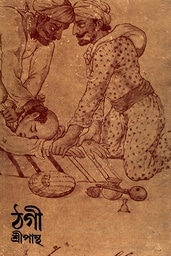

ঠগী - শ্রীপান্থ

তোমরা কজন খাগড়াছড়িতে ভ্রমণে গেছো। বনে ট্র্যাক করার সময় একদল লোকের সঙ্গে দেখা। তারাও বললো সামনেও যাচ্ছে যখন একসাথে যাওয়া যাক। কথায় কথায় বন্ধুত্ব গাঢ় হয়ে গেল। সবাই ঠিক করলে কিছুক্ষণ রেস্ট করবে। ঠিক এমন সময়, "তামাকু লেও"। মূহুর্তে গলায় টের পেলে ফাঁসের কাপড়। একসঙ্গে সবাই শেষ।
ঠগ, ঠগী শব্দগুলোর উৎস সেই ব্রিটিশ আমলে হলেও ইতিহাস তারও আগে। ভারতবর্ষের অন্ধকার যুগে অসংখ্য পথিক হারানোর ইতিহাস কখনো রচনা হতো না যদি এক ইংরেজ অফিসার স্লীম্যান তার কঠোর সংযমে কুখ্যাত অথচ নিখুঁত এই অদ্ভুত সম্প্রদায়কে বাস্তবের আলোতে না আনতেন এবং সমূলে বিনাশ না করতেন। আধিক্যের বিচারে যদিওবা অনেক রং রস চড়িয়ে অনেকগুলো কাহিনীর রূপ দেওয়ার চেষ্টা বইয়ে আছে, কিন্তু ইতিহাসের নিরিখে এত বিশাল একটা গোষ্ঠীর বিচিত্র রীতিনীতি, কায়দাকানুন আর রাহাজানি মিথ্যে নয়।
24th December, 2020